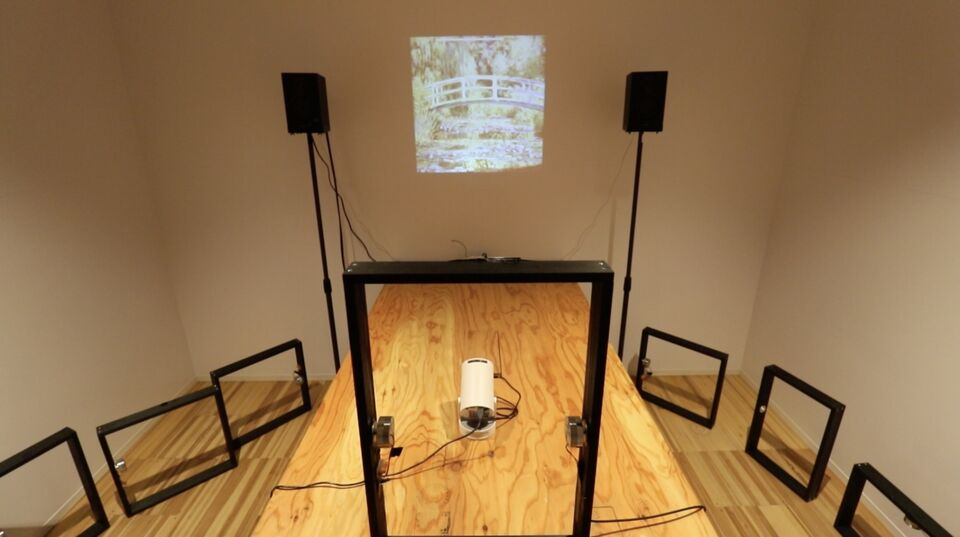
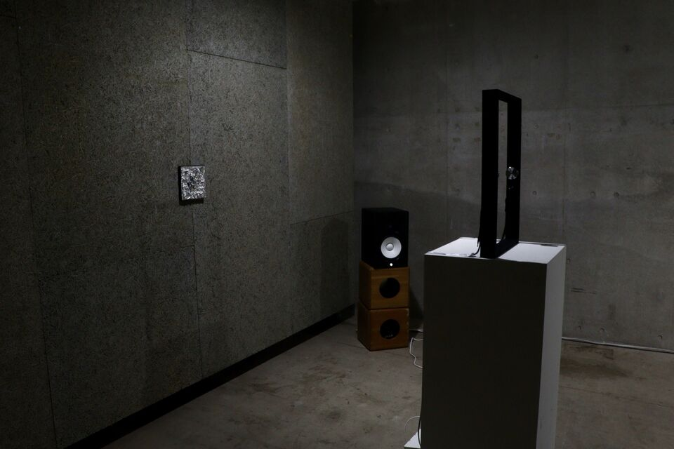
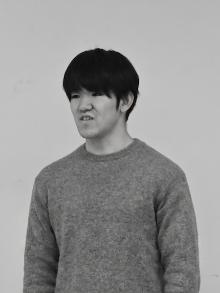

Sound Art ／ Media Art
— Research & Practice
金子 淳平
Jumpei Kaneko


01
プロフィール
Profile
大学ではフランス近現代の美術史と思想を専門に学びながら、課外では身の回りの「関係性」を 起点にサウンドインスタレーション、ワークショップ、プロダクト制作を行なっている。
「絵画を聴く」では、絵画を音で拡張し、誰もが作品の空間に入り込み「実感」できる環境を 目指し研究・制作を行なっている。2026年からはASIBA Creative League 4期にも採択され、 実装を進めている。
02
活動略歴
Activities- 2022 国立新美術館ユースプログラム「第1期新美塾」修了
- 2024 明治学院大学 文学部 フランス文学科 在籍
- 2024 「とびらプロジェクト」アートコミュニケーター13期
- 2026 美学校 サウンド・アート講座 修了
- 2026 100BANCH GARAGE Program
- 2026 ASIBA Creative League 4期 採択
03
展示・登壇・受賞歴
Exhibitions & Awards- 2025 鯖江市制70周年記念 まちなか芸術祭2025 出展
- 2025 tornad2025 企業賞 受賞
- 2025 Sasebo Sound Chronicle Award ファイナリスト選出
- 2025 させぼピース展 ―海からたどる、時の旅 出展
- 2026 NEW SCHOOL成果展「希望の野帖」
- 2026.5 ASIBA Creative League 4期 MIDTERM DEMO DAYにて「絵画を聴く」出展
- 2026.6 美学校 ワークショップ「聴く絵画をつくる」開催
- 2026.7 100BANCHにて「絵画を聴く〜ミキキの交差点〜」開催
- 2026.9 第31回日本バーチャルリアリティ学会大会 論文発表予定